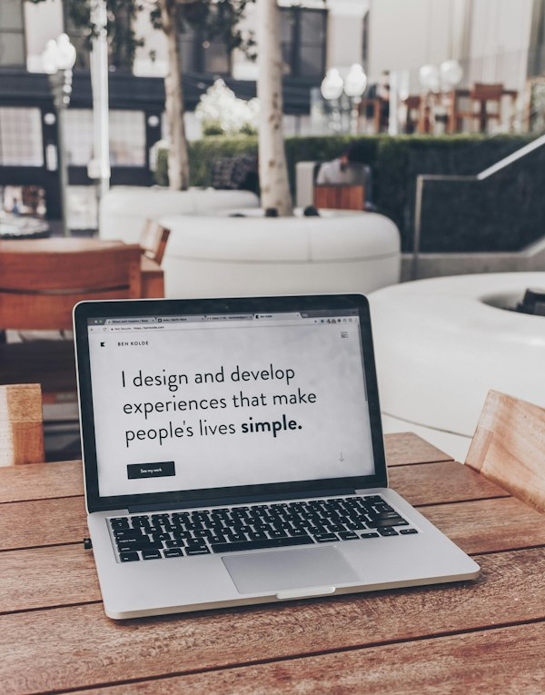

Practical Training & Innovation Hub
Learning, building and improving
I enjoy turning ideas into useful, responsive websites. I focus on clean layouts, practical functionality and writing code I can understand and explain.
I'm Bobmanuel, a Computer Science student at the University of Port Harcourt learning and building with HTML, CSS and JavaScript. This portfolio showcases my skills, projects and growth as a developer.
I enjoy turning ideas into useful, responsive websites. I focus on clean layouts, practical functionality and writing code I can understand and explain.
From learning the basics of web development to building complete pages, each project helps me improve my problem-solving and coding skills.
Learn More →Projects and learning experiences
Core technologies
Portfolio year
University of Port Harcourt

Bobmanuel is a premier technology solutions provider and practical learning hub. We bridge the gap between academic theory and technical industry demands through hands-on laboratory exercises, institutional SIWES guidance, and live software engineering projects.
About Me →Bobmanuel showcases a cohesive curriculum structured for modern technology careers, real defense capability, and industrial relevance.
View All Projects →

I learn by practising, building small features, testing them and improving my code.
I practise by writing code, checking the result in a browser and improving the page step by step.
I review my code, test interactions and make improvements as I learn.
I document my learning and practise explaining the decisions behind my projects.
I use Visual Studio Code, a web browser and local project files to build and test my work.
My progress comes from learning the fundamentals, applying them in projects and explaining how my code works.
Configure developer environments, terminal commands, version control, and core computational syntax.
Execute guided lab assignments, responsive layouts, defensive protocols, or financial market indicators.
Construct a standalone, production-ready project independently to prove mastery of your chosen track.
Present your work, explain your code and demonstrate what you have learned.
Read reflections from students and SIWES interns who advanced their technical careers through our Port Harcourt academy.
"Bobmanuel gave me the confidence to defend my SIWES presentation with zero anxiety. The hands-on web development practice was 100 times deeper than classroom theory alone."
"The cyber defense modules covered realistic threat detection and system auditing. The instructors actually sit with you and explain the 'why' behind every configuration."
"Learning financial market analysis here transformed how I manage risk. The discipline and chart reading strategies are grounded in real practical math, not hype."
Have questions about program schedules, SIWES logbook verification, or defense requirements? Here are direct answers.
Ask a Question →We accept university and polytechnic students for 3-month and 6-month SIWES attachments. Interns receive dedicated workstation access, weekly logbook sign-offs, structured real-world projects, and defense coaching.
No prior background is required. We start with foundational computing concepts, operating system navigation, and step-by-step logic before advancing to high-level engineering modules.
All core courses and SIWES attachments are conducted primarily on-site at our physical hub in Port Harcourt, Rivers State to guarantee hands-on lab access, stable power, and live instructor guidance.
Upon successfully defending your final capstone project, you receive an official Certificate of Competency from Bobmanuel, along with fully endorsed ITF SIWES documentation.